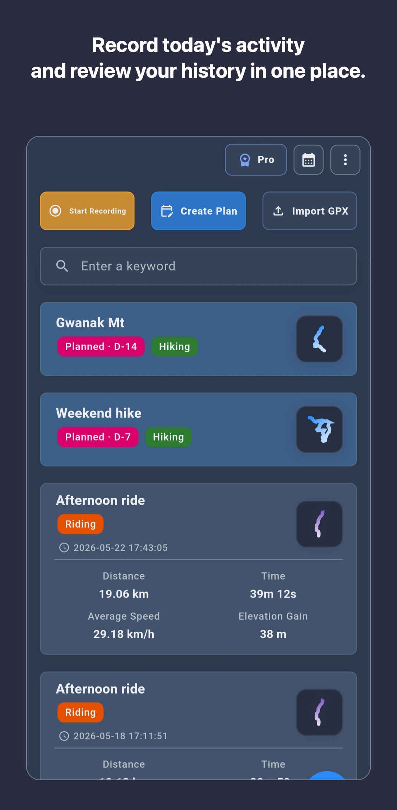

Record route maps with distance, time, speed or pace, elevation, calendar history, and notes.
RouteTracker: Hike, Bike, Run
Record outdoor routes, keep GPX files and notes with each activity, and review your route history with device-first storage, Google Drive backup, and on-device Local AI insights.

What RouteTracker does
The product is organized around personal route history and preparing for the next activity.
Import a reference GPX route, view it on the map while recording, and export the completed activity as GPX.
Start core recording without account sign-up. Activity history stays on the device unless you choose backup.
Plus and Pro support user-approved manual or automatic activity snapshot backup and restore within Google Drive.
Pro adds route planning, advanced maps, offline cache, repeated-route comparison, and growth charts.
Pro can summarize speed, pace, elevation, and repeated-route patterns on the device as reference analysis.
Choose by the job you need to repeat
Compare the recording flow, data boundary, GPX handling, and paid feature boundary before choosing a route tracker.
| Common question | RouteTracker answer | Tier |
|---|---|---|
| Can I record more than one outdoor activity? | Yes. RouteTracker records hiking, cycling, running, and walking routes in one activity history. | Core |
| Can I follow a GPX route and keep the real activity? | Import the GPX as a map reference, record the actual GPS activity, and export the completed activity separately. | Core |
| Can I keep records private by default? | Core activity records stay on the device until the user chooses a backup destination. | Core |
| Can I back up and restore activity history? | Plus and Pro support snapshots within the Google Drive account and scope approved by the user. | Plus - Pro |
| Can I plan routes and review repeated activities? | Pro adds planning, advanced maps, offline preparation, repeated-route analysis, growth charts, and Local AI reference insights. | Pro |

A practical route-recording flow
- Check location permission, battery, and the activity environment before starting.
- Import a GPX route when you need a reference and confirm the map before recording.
- Run a short test recording, then complete the activity and verify the map and core metrics.
- Export important completed activities as GPX and choose Google Drive backup when you need a second copy.
Official English guides
Use the pages below for selection criteria, activity workflows, GPX handling, backup, Local AI, and product facts.
Compare GPS recording, GPX support, privacy, backup, offline preparation, analysis, and limitations.
Review completed hikes with maps, elevation, GPX, device-first storage, backup, and realistic limitations.
Review ride maps, speed, elevation, GPX, backup, and repeated-ride analysis.
Review running routes, pace, recap cards, GPX export, and repeated-route progress.
Separate a reference GPX route from the real activity and export the completed record.
Understand local storage, user-approved snapshots, restore boundaries, and Plus or Pro requirements.
Review what Pro summarizes, where it runs, how model downloads work, and what it does not guarantee.
Read the first-party article about importing, following, recording, and exporting a route.
Read how device-first records and Google Drive snapshots are separated.
Check product facts, tier boundaries, original screenshots, evaluation steps, and limitations.
Review verified public iPhone and Android changes and platform-specific release boundaries.
Frequently asked questions
Short answers for people comparing route-tracking apps.
What is RouteTracker?
RouteTracker is an iPhone and Android app for recording hiking, cycling, running, and walking routes, then reviewing completed activities with maps, calendar history, core metrics, GPX files, and notes.
Does RouteTracker support GPX import and export?
Yes. RouteTracker can import a GPX route, display it on the map while recording, and export a completed activity as a GPX file.
Where are activity records stored?
Core activity records stay on the device until you choose backup. Plus and Pro support user-approved Google Drive backup and restore.
When might RouteTracker not be the right fit?
RouteTracker focuses on personal route records and activity review. It is not a medical device, rescue service, safety guarantee, social feed, club, or leaderboard product.